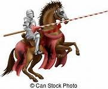

|
|
|
第二部 理想の騎士
第七章 ガヴァーン
ガヴァーンはキングリムルゼルの挑戦を受けるために、アスカルーンに向かっていた。大勢の部下を引きつれて、森をぬけ、丘の頂上に出たとき、突然開けた視界に、驚くべきものを見た。丘の上から眼下に広がる平原に、数えきれないほどの巨大な軍勢が動いていた。軍勢は戦旗をひるがえし、勇ましく行進している様子から、戦場に向かっていることは明らかだった。
ガヴァーンは言った。
「もし我々があの軍勢を相手にしたら、とうてい勝つことはできないだろう。我々の人数と比べたら、とてつもない数だ。軍勢の行進の先頭もしんがりも見えないほどだ。そうだからといって、ここでひるんで逃げ出すわけにはいかない。そのような者は、騎士としては役立たずだ。
ゆっくりと近づいて話を聞いてみよう。何が起きたのかがわかるだろう。もしも奴らが敵意を見せて、戦いを挑んでくるようなことがあれば、逃げ出さずに、堂々と槍の一撃を食らわせてやればいい。」
ガヴァーンは遠くに見える軍勢に向かって、静かに馬を進ませた。
ガヴァーンは円卓の騎士の中でも、誰にも引けをとらない剛勇の騎士である。決して負けを知らない、その強さと勇敢さは多くの賞賛をあびていた。それほどの強者でありながらも、ガヴァーンは正しい心を持ち、優しく穏やかで、いつも平常心と冷静さを失わなかった。常日頃から武芸にはげみ、心身の鍛錬を怠らなかったが、自ら戦いをしかけることはなかった。無意味な戦いは好まず、できるだけ平和に物事を解決しようとした。友に対しても友情厚く、笑顔をたやさず、他の騎士からは、理想の騎士として、厚い信頼を受けていた。
そんなガヴァーンでさえも、この時ばかりは、脅威を感じた。事前に戦いの準備をしてから近づかなければならないほど、目の前の軍勢は巨大だった。
ガヴァーンは一定の速度で、静かに隊列に近づいていった。隊列のそばで静かにたたずみ、隊列が通っていくのを観察した。所々に掲げられている軍旗の中に、知っている旗はなかった。お互いに未知の人々なのだろう。ガヴァーンの一行が隊列のそばにいても、誰も話しかけてくる者はいなかった。隊列の人々は、立ち止まっているガヴァーンを見て、この巨大な軍勢の一員だと思ったのだ。
ガヴァーンははてしなく続く隊列を、辛抱強く最後まで見とどけて、ようやくそのしんがりをやり過ごした。そこへ、後を追いかけるように、一人の小姓が馬を走らせてきた。ガヴァーンはその小姓に近づいて声をかけた。
「そなたが追いかけている隊列は、どこの主君の隊列だろうか。お聞かせ願えぬか。」
若い騎士は馬の速度をゆるめて言った。
「何を言っているのですか。あれは、あなたの一行でしょう。なぜ私に百も承知のことをお聞きなさるのですか。」
「お恥ずかしいことだが、私は旅の途中にあって、この地域のことについては、何も知らないのだ。隊列の軍旗も、今日はじめて見るものばかりなのだ。」
「それは失礼いたしました。私の無礼をお許しください。」
「あなたは礼儀正しい騎士だ。どうか、あの隊列について、お聞かせ願いたい。」
「では殿。今ここを進軍していた者は、まず、ゴルス国のポイディコンユンツ王の軍隊です。それに続き王の息子メルヤカンツの軍勢です。このメルヤカンツという男がひどい男で、女性の愛を得ようとすると、人妻だろうと少女だろうと、見境なく力ずくで奪いとり、暴力ざたにして片づけるのです。あのような者には、死刑がふさわしいです。
殿、この後に続いていたのがリース国の王メルヤンツの軍勢です。このメルヤンツも非道な男なのですが、このたびの戦いは、このメルヤンツが原因なのです。事のなりゆきを詳しくお話しましょう。
メルヤンツの父、リース国の先王シャウトは、臨終の際に、息子メルヤンツの教育を臣下であるリプパウト侯に依頼しました。リプパウト侯は先王の頼みをすべて誠実に引き受けました。若い嫡子メルヤンツを自分の城に連れてかえり、愛情を注いで育て、教育しました。ところが、リプパウト侯には娘が二人いまして、姉がオビーエ、妹がオビロートと言いますが、ある日、まだ若いメルヤンツが姉のオビーエに、
『あなたにお仕えしますので、あなたの愛をください。』と言ったのです。
するとオビーエは
『あなたがどんなにすごい栄誉を得ても、あなたのご希望におこたえするには、五年も六年も早いです。』と言いました。それもそのはず、オビーエは、まだ十歳そこそこだったのです。するとメルヤンツは言いました。
『オビーエ様、あなたの態度は不愉快です。あなたの父上は私の家来なのです。私から土地をたくさんもらっていますから、私の命令には、したがわなければなりません。』
『土地をもらったのは、私の父であり、私ではありません。私は自由です。あなたからとやかく言われる筋合いではありません。』
『ずいぶんと大きな態度をとりますね。その態度は、どなたから教えられたのでしょう。きっと父上から教えられたのでしょうから、この責任は父上に取っていただきましょう。槍と剣をとって、真剣勝負で決着をつけさせていただきます。』こう言ってメルヤンツは去っていきました。これによって、戦争が始まることになったのです。オビーエもリプパウト候も嘆き悲しみ、裁判に訴えてどうにか話し合いで、ことを治めようと努力したのですが、無駄でした。
それで今、まさに戦いが始まろうとしていて、ポイディコンユンツとメルヤンツの軍勢が、リプパウト候のいるベーアーロシェ城に急いで向かっているところです。
私の主君リザヴァンダーも、この戦いに加わることになり、私としては、あのひどい男どもの側について戦うのは、いささか不本意ではありますが、主君を守り援護することが私の役目なので、致し方なく職務をまっとうする所存でございます。」
そこへ後方から、けたたましい勢いで軍馬が走ってきた。騎乗しているのはいきり立った顔をしたリザヴァンダーだった。目の前の若い騎士は、
「殿、失礼いたします。」と言って、通りすぎた軍馬を追いかけていった。
ガヴァーンは言った。
「この戦いは、力ずくで女性の愛を得ようとする非道な男との戦いだ。善良な人々の窮地を救わなければ、騎士としての誇りが許さない。この戦いを手をこまねいて、見ていることはできない。そんなことをすれば、私の名誉は失われてしまう。しかし、戦いが長引けば、キングリムルゼルとの決闘に遅れてしまう。そうなれば、私の名声が地に落ちてしまう。」
ガヴァーンは悩んだ末に、決断した。両方の名誉を獲得することにしたのだ。
「神よ。祝福を与えたまえ。私が二つの戦いを案じて、気が散ることがないように。」
ガヴァーンはベーアーロシェ城に向かって、馬を進めた。ベーアーロシェ城は強固な要塞だった。防御の機能にすぐれ、十や二十の部隊が攻撃しても、陥落することはないだろうと言われていた。
城主のリプパウト候は、寝食をともにし、愛をもって教育してきたメルヤンツを相手に戦う気はなかった。愛する者を相手に、どうして理由のない戦いを望むことができようか。しかも敵陣があの大軍では、とても勝ち目はない。そこでリプパウトは、攻撃されることは避けられなくても、自ら相手に攻撃することはしない、と決めた。防御だけで城を守ろうと思ったのだ。敵の攻撃を防戦一方で耐えしのぐために、強固な城を、さらに強固にした。すべての城門を壁で塗りかためたのだ。これで城は磐石となったが、人の出入りには、不自由が生じた。
ベーアーロシェ城に到着したガヴァーンは、これを見て、憤慨した。助けようと思っても、城の中に入って話をすることもできない。城門は閉ざされていて、まるで門前払いをくらったもの売りのようだった。ガヴァーンは城の周辺をまわり、城壁のそばに菩提樹とオリーブの木を見つけた。一番いい木陰に馬を止め、馬からおりた。小姓たちは、そこにキルティングの敷物をしいて、くつろぐ準備をし、ガヴァーンはそこに腰をおろした。
その城壁の内側は塔になっていた。塔の高いところに、二人の少女オビーエとオビロートと、その母がすわっていた。ガヴァーンの様子を見ていた母が言った。
「あそこにいらっしゃるのは、どちらの一行なのでしょう。」
姉のオビーエが、不機嫌をまきちらすかのような態度で言った。
「商人ですわよ。あのみっともない格好は、あの方のしぐさは、どう見ても、商人ですわ。」
騎士をつかまえて商人呼ばわりするのは、とんでもない侮辱である。妹のオビロートは、無礼な発言に反発した。
「なんてひどいことをおっしゃるのですか。あんなに素敵な方なのに。私に愛を告白していただけたら、喜んで願いを叶えてあげるわ。お姉さんは、リース国のメルヤンツ王の求愛には、高慢な態度でおことわりになられたのよね。お姉さんはひどいことをしましたのよ。」
この会話は、すっかり下にいるガヴァーンの耳に入ったが、ガヴァーンは気にしないで聞きながした。
城門の前には、次々に援軍がやって来た。リプパウト候に恩義のある者は、この時こそ恩返しの時と思い、勇んでベーアーロシェ城に駆けつけたのだ。ところが、ベーアーロシェの城門は、すべて壁で塗りかためられていて、人の出入りができなかった。リプパウトは言った。
「援軍が来てくれるとわかっていたら、城門は開けておいたのに…。
このままでは援軍だけが城外で戦うことになってしまう。失敗した。城門を壁で塗りかためたのは、失敗だった。」
人々は言った。
「今からでも遅くはありません。城門をひとつでも開けましょう。これだけの援軍がいれば、十分に戦えるはずです。主君メルヤンツに対する忠誠心は、よくわかります。しかし、防戦一方だけで、万が一にでも攻めこまれたら、我々は城内で全滅してしまいます。それよりも、城外で堂々と戦った方がいいです。相手がメルヤンツだろうとメルヤカンツだろうと、我々は立派に戦えます。」
人々の賢明な説得で、リプパウトは城門を開けた。開いた城門から城外へ飛び出した者は、次々と雄叫びをあげて、一騎討ちを始めた。これが前哨戦となり、戦いは拡大していった。
ガヴァーンは戦いが始まったのを見て、兜をつけずに馬に乗った。戦いの場から少し離れたあたりで馬を歩かせながら、戦いの様子を見ていた。ガヴァーンには戦えない理由があった。ここで戦いを始めてしまったら、キングリムルゼルとの決闘に影響が出るおそれがある。ガヴァーンはそのために、ここでは戦わないように自制していた。
敵陣の城外軍は、メルヤンツとその軍勢が戦いを繰り広げていた。メルヤンツ王自らの参戦で、敵の軍勢は意気盛んとなり、鬨の声を上げて息荒く、相手の槍を折りまくっていた。
塔の上から、この光景を見ていたオビーエは言った。
「私の騎士メルヤンツ様は、勇敢に戦っていらっしゃいます。オビロート。あなたの騎士は腰くだけね。戦うのが怖いみたいよ。兜もつけていないわ。私たちの城を守るためには、誰かほかの人を探さなければいけないわ。」
妹のオビロートはガヴァーンをかばって言った。
「お姉さん。そんなことはありません。あの方は、きっと後でご活躍なさって、私たちの城を救ってくださいますわ。あの立派な姿を見ていれば、誰だってそう思います。」
ガヴァーンはこの二人の会話を聞いていたが、何も言わずに静かにやり過ごした。
オビーエは、なぜかガヴァーンに敵意を持っていた。ガヴァーンには何の咎もなかった。オビーエ自身に問題があったのだ。メルヤンツとオビーエの愛はまったく誠実なものだった。それにもかかわらず、わずかな感情の行き違いによって、メルヤンツが怒り、オビーエのもとを去ってしまった。そのことが、オビーエを失望させ、慎み深さを失わせてしまったのだ。オビーエの感情は混乱し、どこかで鬱憤をはらさなければ、気が済まなかった。オビーエにとって最高の騎士はメルヤンツであり、メルヤンツが去った今、それ以上に立派に見える騎士ガヴァーンは、オビーエにとって、うとましい存在であった。
それでオビーエはガヴァーンにいたずらをして、失脚させようとした。
戦いが一旦休戦状態に入り、ガヴァーンがオリーブの木陰に戻ったとき、オビーエはガヴァーンのもとに一人の小姓を送りこもうとした。オビーエは小姓に言った。
「あのオリーブの木の下にいる騎士のところに行って、たずねなさい。その馬は売り物ですか。他に何か上等な服など、売っていただけるものはありますか。とね。」
オビーエはガヴァーンを侮辱しようとしたのだ。
身分の低い小姓が、立派な騎士に対して、商人扱いするような横柄な態度をとれば、それだけで、ひどい侮辱であり、剣で刺し殺されても仕方がないだろう。オビーエは、そんな危険な行為をさせようとしたのだ。
その小姓は歩いてガヴァーンの近くに行った。すると、ガヴァーンはものすごい眼光で、小姓をにらみつけた。ガヴァーンは小姓がここへやって来た理由が、およそ想像できたのである。小姓は縮みあがって、立ち止まってしまった。オビーエから指示されたことは、一言も言えなかった。ガヴァーンは言った。
「とっとと失せろ。さもないと気を失うまで、なぐりつけるぞ。」
小姓は、あわててさっさと逃げかえった。
オビーエは、小姓が役立たずに終わったのを聞いて、次なる作戦を考えた。今度は、小姓に、このベーアーロシェ城の城伯であるシェルレスのところに行くように言った。
「シェルレス様のところに行って、お願いしておくれ。オリーブの木の下にいる男は詐欺師です。私たちをだまそうとしています。そこにいる馬や金品は、没収してしかるべきものですから、さし押さえて下さい。そうお願いしてちょうだい。」
小姓はシェルレスのところに行き、言われたことを丁重にお願いした。
シェルレスは言った。
「詐欺師を取り締まればいいのですね。すぐにそこへ行ってみましょう。」
シェルレスはガヴァーンのいるところへ行った。シェルレスはオリーブの木陰に立っているガヴァーンの前に立ち、挨拶をして、ガヴァーンをよく観察した。ガヴァーンは胸板の厚い立派な騎士で、堂々とした態度をしていた。その表情には、一点の弱みも隠し事も、後ろめたいものも、何ひとつ見出すことはできなかった。この騎士が自分よりも何倍も勇敢で立派な騎士だということは、明らかだった。シェルレスは、こう言った。
「騎士殿。あなたは異国の方ですな。あなたのような立派な方を、こんな場所にすわらせてしまい、申し訳ございません。私どもで宿をご用意させて下さい。必要なものをすべてご用意いたします。」
ガヴァーンは応えた。
「ご親切をありがとう。」
「とんでもございません。私どもでできる限りのことをいたします。さぁ、私の館に行きましょう。」
シェルレスは、ガヴァーンと小姓たちを連れて、自分の館に向かった。
またしても策略に失敗したオビーエは、今度は、自分の父リプパウトのもとに、女旅芸人を使わせて、にせ金作りが町に来ていると言わせようとした。
「いいかい。あの男はにせ金作りをしていて、高価な金品をたくさんもっています。すぐに金品を没収して、牢屋にぶち込むほうがいいです。そう伝えておくれ。」
女旅芸人がリプパウトにこれを伝えると、リプパウトは、悪者はさっさと捕まえて、持ち物を力ずくでも奪ってしまおうと思い、ガヴァーンの後を急いで追いかけた。
するとリプパウトは、その途中でシェルレスに出会った。シェルレスは言った。
「何をそんなに急いでいるのですか。」
「私は詐欺師を追っているのだ。あの男はにせ金作りだと、皆が言っているぞ。」
シェルレスは、リプパウトがだまされていると思って笑った。自分もだまされかけたので、すぐにわかったのだ。
「あなたはだまされているのです。私もだまされかけたから、わかります。あの方は立派な騎士です。あの方には何の罪もありません。あなたに騎士を見る目がおありなら、あの方が誠実な人間であることが、すぐにわかるでしょう。今、あの方を私の館に案内したところです。よろしければ、お会いになってください。あの方は、きっと私たちの力になってくださるはずです。」
リプパウトはシェルレスの言葉を信じた。
「それでは、彼に会わせてもらおう。」
リプパウトはシェルレスの館に行った。リプパウトはガヴァーンを一目見ると、すぐにシェルレスの言葉に納得した。ガヴァーンの輝くような誠実さが、その姿にあふれていた。リプパウトはすぐに話しはじめた。
「あなたにお会いできて光栄です。こんなに嬉しいことはございません。あなたの訪問は我々にとって大きな力となってくれることと思います。もしも、おさしつかえなければ、私たちの味方になってください。」
ガヴァーンは答えた。
「あなた方を援助したいのは山々です。あなたのためでしたら、どんな戦いであろうと、運命をともにしたいと思います。しかし、今は戦うことのできない身なのです。私はある一騎討ちを行わなければならず、今はその旅の途中です。その試合が済むまでは、他の戦いをすることはできません。戦いが長引いて、一騎討ちの期日に遅れることになれば、私の名誉がなくなってしまうからです。」
すると、リプパウトは娘のオビーエとオビロートを愛していることを切々と語った。娘たちの幸せのためにも、自分の無実を晴らすためにも、この戦いに負けるわけにはいかない。勝利のために、ガヴァーンにこの戦いへの加勢を懇願した。
ガヴァーンは答えた。
「私は自分の誠実を守るために、一騎討ちに決して遅れたくはないが、今夜一晩考えて、明日返事をいたそう。」
リプパウトは感謝し、わずかな希望を残して、その場を辞した。
リプパウトはシェルレスの館を出ようとしたとき、そこに自分の娘オビロートとシェルレスの娘クラウディテが一緒に遊んでいるのを見かけた。
「オビロートや。ここで何をしているのだ。」
まだ七歳のオビロートが、ここへ来たのは、クラウディテと一緒に遊ぶためではなかった。幼い子どもながらにも、お城の危機を感じ、成人女性がすることをまねして、自分の愛をかけて騎士に戦ってもらい、この危機を脱出するために役に立とうと思ったのである。
「お城からきたの。わたし、あの異国の騎士におねがいしてみるつもりなの。わたしの愛とひきかえに、わたしのために戦ってくださるように。」
「オビロートや。ありがとう。だが残念なことに、あの方は事情があって、戦いに加勢してくださるかどうかは、まだわからないのだ。今、考えていらっしゃるところだ。可愛いお前が申し出てくれたら、考えを変えてくださるかもしれない。お前から頼んでみてくれないか。」
オビロートは、一面識もない騎士ガヴァーンのところへ行った。ガヴァーンはオビロートを迎えいれて挨拶をすると、まずお礼を述べた。
「私が無礼なことを言われて、商人扱いをされたとき、私をかばってくださいましたね。ありがとう。感謝します。」
オビロートは精一杯、大人の振る舞いをしようとして、言った。
「本当のことです。当然のことです。」
ガヴァーンは感謝の気持ちを、愛の表現にして言った。
「許されるものならば、小さいお嬢さんのために、愛の苦しみを味わいたいものです。」
すると、オビロートは話しはじめた。
「あなたにお願いがあります。わたしたちは違う名前ですけど、本当は同じなのです。あなたはわたしで、わたしはあなたなのです。だから、あなたへのお願いは、わたしへのお願いでもあります。あなたがわたしを助けたら、あなたはあなたを助けたことになるのです。だから、あなたはわたしを助けなければなりません。わたしは助けてほしいのです。わたしのお願いをことわらないでください。わたしに恥をかかせないでください。あなたがお望みならば、わたしは心からの愛をさしあげるつもりです。あなたが男らしい人ならば、わたしに尽くしてくださると信じています。」
ガヴァーンは、思いがけぬ大人びた愛の告白に驚きながらも、ユーモアを交えて誠実に答えた。
「これはこれは、あなたはもう立派な女性ですね。しかし私は今，愛のために戦うことができない身なのです。それに、もし私があなたを愛することができたとしても、あなたが結婚できるのは、十二歳からなので、まだあと、五年もあります。あなたが愛を捧げることができるようになるまで、私は五年も待たなければなりません。」
ここまで喋って、ガヴァーンはパルシファルの言葉を思い出した。
「神より女性を信頼する」という言葉が、ガヴァーンの心を変えた。ガヴァーンは可愛いオビロートを見ていて、ふと思った。神の掟にしたがったり、世俗の約束事を守ったりすることよりも、目の前にいる可愛らしい女の子の信頼に応えることの方が大切なのではないかと。
ガヴァーンは、先ほどのオビロートの口調をまねし、その気持ちを尊重して言った。
「私の剣をあなたの手に持ってください。誰かが私に一騎討ちを挑んだときは、あなたが私の代わりに戦わなければなりません。そのとき人には、私が戦っているように見えますが，本当はあなたが戦っているのです。」
オビロートは満面の笑みをたたえて言った。
「承知しました。あなたはわたしを救ってくださいましたから、わたしはあなたの楯になって、あなたの心になります。戦いの時は、いつもあなたのおそばにいます。」
「オビロート様。私はあなたのために戦いますから、あなたの愛と贈り物の両方をいただきとうございます。」
オビロートは騎士に愛を告白したときは、贈り物を上げなければならないことに気がついて、あわてて言った。
「それでは、用意をしなくては。家に帰って、愛のしるしを急いで用意します。」
ガヴァーンはオビロートとクラウディテを見て、なんて、ませた女の子たちなのだろうと感心し、思わず感想を述べた。
「あなたたちが年頃になったら、たくさんの騎士があなたたちの愛を獲得するために、槍試合をすることでしょうね。」
オビロートとクラウディテは大喜びした。
帰り道でクラウディテが言った。
「ねえ、オビロートは、あの方に何をさしあげるつもりなの。わたしたちはお人形しか持っていないじゃない。わたしのお人形の方が少しきれいだから，それをあの方にさしあげてもいいわよ。」
「人形…。」
「そうよ。人形よ。」
ちょうどその時、向こう側から、リプパウトがやってきた。オビロートは父に向かって言った。
「お父さま。あの方が、わたしのお願いを聞いてくださったの。それでお父さまに頼みがあります。」
リプパウトは朗報に目をみはって言った。
「そうか、それはすごいことだ。何とすばらしいことだ。今日は救いの日だ。
オビロートや。お前の頼みとは何だい。何でも聞いてあげよう。」
「わたし、あの方に愛のしるしをさしあげると約束したの。でも、わたしはお人形しかもってないの。さしあげるものがないと、恥ずかしくて顔が赤くなってしまいます。」
「大丈夫だよ。お父さんが贈り物を探してあげよう。それにしても、あの方は誇り高い高貴なお方だ。」
リプパウトは城に戻ると、妻に言った。
「妻よ、手を貸してくれないか。あの騎士がオビロートに仕えてくれるのだ。何か印の品がほしいと申されている。オビロートは愛の印として、上等な服を着たがっているようだ。」
オビロートの母は言った。
「あぁ、何とすばらしい方なのでしょう。あの異国の騎士でいらっしゃる方ですね。」
オビロートの母は世事に長けていたので、さっそく上等なベルベットと絹の布地を持ってこさせ、オビロートの体に合わせて裁断した。服が仕立てあげられると、オビロートは試着した。寸法通りぴったりに仕立てられて、オビロートによく似合ったが、片腕には袖がなく、腕が丸見えだった。片方の袖は服に縫いつけられずに、ガヴァーンにさし上げることになっていたからだ。オビロートは、縫いつけられなかった片袖を頬にすりあてて、ガヴァーンを愛しく思って言った。
「かわいい片袖よ。わたしのかわりに、あの方のそばへ、行ってきてちょうだい。」
オビロートは、片袖をクラウディテに渡し、ガヴァーンに届けてくれるように頼んだ。
クラウディテは、ガヴァーンに片袖を届けた。
片袖を受け取ったガヴァーンはたいへん喜んで、さっそく戦いで使う楯に、この袖を打ちつけた。ガヴァーンは愛のしるしの片袖のついた楯をもって戦うのだ。
ガヴァーンは晴れ晴れとした気持ちになった。
その日が終わり、夜になった。両陣営とも大軍が陣を張っていた。城内軍は防衛のために壕を掘り、堡塁やバリケードを作った。援軍も城内に入って来て、どの門も援軍の勇士らによって警護され、夜明けにはすっかり防御の態勢は整っていた。
夜明けとともに聞こえてきたのは、鳥のさえずりではなかった。戦いがはじまり、人馬が激突する音が聞こえてきた。雷鳴がとどろくような音をたて、槍が砕けちった。
敵陣のアストル公が城内軍のカルデファプレートの軍勢に襲いかかってきた。敵と味方が激しく接触し、混戦になった。それを見たガヴァーンは、そのもつれた戦いのまっただ中へ馬を走らせ、突撃していった。ガヴァーンの戦いはすさまじかった。多くの騎士を馬上から突き落とした。ガヴァーンはアストル公の軍勢をほぼ撃破し、多くの軍馬をぶんどり、戦利品を獲得した。
そこへ、リザヴァンダーがガヴァーンめがけて突進してきた。ガヴァーンは優雅に身をこなし、槍の一撃で、リザヴァンダーを馬上から突き落とした。その時、この戦争の起こりを礼儀正しく教えてくれた小姓が近づいてきて、目の前でリザヴァンダーが落馬しているのを目撃した。小姓は狼狽した。ガヴァーンは小姓を気の毒に思って、ぶんどった馬を返してやった。世話になったこの小姓との巡りあわせが残念だ。
すると、ラヘドゥマーンがガヴァーンめがけて馬を飛ばしてきた。そこで見事な槍の一騎討ちが行われた。しかし、剛勇のラヘドゥマーンが草の上に落馬した。ラヘドゥマーンはガヴァーンに忠誠の誓いをした。
壮大な戦いが繰り広げられている戦場で、たびたび城内軍に対して一騎討ちをしかけてくる剛勇の騎士がいた。騎士は赤い甲冑をつけて、人々から「名無しの騎士」と呼ばれていた。それはパルシファルであったが、誰も彼の名を知らなかった。彼は三日前にやって来て、メルヤンツ側に付いたのだ。メルヤンツの陣営は七つの軍勢からなっており、一番左の軍勢がパルシファルの軍勢だった。パルシファルには、十二人の小姓が付いていたが、どんな時も彼らはパルシファルの後ろに控えているだけだった。パルシファルは、一騎討ちでシルニエール王とその弟ミラベルを捕虜にした。彼の最大の武勲はマラングリエス公に忠誠の誓いをさせたことである。
ガヴァーンは遂に争いの張本人メルヤンツと槍を交えることになった。二つの人馬はものすごい勢いで接近し、激突した。ガヴァーンは狙いを定めて槍を突いた。その槍はメルヤンツの楯を貫いて、腕に突き刺さった。しかし、あまりの衝撃の強さに、二人は馬上から転落した。すぐに剣の戦いが始まった。ともに譲らぬ打ち合いとなったが、腕を負傷したメルヤンツは早々に疲労を感じた。ガヴァーンはメルヤンツを押し倒し、忠誠の誓いを迫った。メルヤンツはガヴァーンに忠誠の誓いをした。
今や，軍勢には疲労の色が見えていた。しかし、メルヤカンツとカルデファプレートは、互角の戦いを続けていた。そこへガヴァーンが馬を飛ばして駆けつけた。二対一になっては、メルヤカンツも歯がたたなかった。メルヤカンツは地上に落とされ、何頭もの馬に踏みつけられて、血だるまになった。救助に向かった小姓がメルヤカンツをタンカにのせて、自軍に運んでいった。こうして戦いは終わった。
この戦いで誰が最も活躍したかと言えば，城内軍にあっては、オビロートのために戦ったガヴァーンであり、城外軍にあっては、メルヤンツのために戦った赤い騎士パルシファルだろう。
赤い騎士パルシファルはメルヤンツから感謝の言葉をいただこうと思ったが、メルヤンツは陣営にはいなかった。城内軍の捕虜になっていたのだ。そこでパルシファルは自分が捕虜にした三人の騎士を集めて言った。
「リース王のメルヤンツが城内軍の捕虜になった。どうにか釈放されるようにしたいのだが、諸君に協力をお願いしたい。諸君は私に忠誠の誓いをしたのだから、私の指示にしたがってもらおう。」
ミラベルとシルニエール王とマラングリエス公の三人は、うなずいて言った。
「何なりとお申し付けください。」
パルシファルは言った。
「諸君ら三人を城内に帰してあげよう。ただし，条件がある。諸君らを帰す代わりに、メルヤンツを釈放して自陣に引き渡すことだ。」
ミラベルが答えた。
「それは難しいかもしれません。」
「難しいか…。」
「はい。我々が城内に帰っても、メルヤンツが釈放されるとは思いません。我々が帰るだけで終わってしまいます。」
「そうか。もしそれが難しいならば、別のことで、頼みたいことがある。聖杯を手に入れて、私のところに持ってくることはできるか。」
シルニエールが言った。
「私は聖杯のことは何も知りません。それがどこにあるのかさえ、わかりません。」
マラングリエスが言った。
「私も聖杯がどこにあるのかは知りませんが、噂によれば、アンフォルタスという王が聖杯を守っているという話を聞いたことがあります。でも、どこにあるのかは…」
パルシファルは自分の名前を伏せておきたかったので、慎重に言葉を選んで言った。
「それが叶わぬならば、ペルラペイレに行って、女王に忠誠の誓いをしなさい。そして女王に伝言を届けてほしい。
かつて女王のために、クラーミデーと戦った者が、聖杯を求めて旅をしている。そして今もなお女王を愛し、心を痛めている。そう伝えてくれ。それでは、諸君、城内へ戻るがよい。」
三人はパルシファルに別れを告げ，城に向かった。
戦いが終わったので、パルシファルもベーアーロシェ城から立ち去ろうと思い、自軍の人々に別れを告げた。小姓らは、ここにとどまってくれるように頼んだが、パルシファルは次なる目標のために、とどまることはできないと伝え、旅立っていった。
城外軍の捕虜から釈放された三人が城内に戻ってきた。ガヴァーンは彼らの話を聞いて、その様子から、相手の騎士がパルシファルだと思った。ガヴァーンはパルシファルと自分が、戦場で戦うはめにならなかったことを神に感謝した。抜きんでた活躍をした二人が鉢合わせなかったことは奇跡であり、神がそのように取りはかられたのだとしか思えなかった。
ガヴァーンはオビロートからもらった袖を、楯からはずした。袖は、槍や剣で打ち裂かれており、ボロボロにちぎれていた。ガヴァーンは慎重にはずした袖を、オビロートのもとに届けるように頼んだ。
オビロートは袖を受けとると、大喜びで腕につけて見せた。オビロートは姉のオビーエに言った。
「おねえさん、見て。このはげしい戦いのあとを。そして勝利のしるしよ。
だれが、こうしたと思って。わたしの騎士、あのお方ですのよ。」
オビーエはこれを聞いて悔しい思いをした。自分の騎士メルヤンツが敗北し、しかもこの城の中に、捕虜として幽閉されているのだから。オビーエは黙って下を向いたまま、妹に返す言葉はなかった。
戦いの幕が閉じたので、ガヴァーンは平和を取りもどすために、事態の収拾に乗りだした。戦いの原因となったメルヤンツとオビーエとの和解、そしてリプパウトとの和解がなされなければならない。ガヴァーンは城の中に居合わせた人々と捕虜に向かって言った。
「戦いは終わったが、戦いの原因となったことが、まだ解決されていない。今ここで、すべての問題を和解にいたらしめる必要がある。
メルヤンツ殿。そなたにとっても、当事者同士が直接会って、話をした方がよいであろう。」
すると、シュルレスが補足するように言った。
「私の主人、リプパウト候はメルヤンツ王に気を使われて、遠慮してここにいらっしゃらないのです。是非とも、直接お会いしていただけたらと思います。」
ガヴァーンは言った。
「それでは、ここにいる者全員で、リプパウトのところに出向くことにしよう。そして、メルヤンツ殿。そなたは私が仕えている女性オビロートの捕虜となっていることを、忘れないでいただきたい。私が得た称賛は、すべてオビロートのものなのだから。」
シュルレス、ガヴァーン、メルヤンツとそこに居合わせた人々は、連れだってリプパウトのいる宮廷に向かった。
リプパウトのいる宮廷では、リプパウト、夫人、オビーエ、オビロートの四人が待っていた。リプパウトはメルヤンツの姿を見ると、すぐに駆けよってきた。
「殿、殿がよろしければ、私の妻がご挨拶のキスを交わしたいと申しております。」
メルヤンツは戦いに敗北したとはいえ、まだ心のわだかまりは消えていなかった。
「ご夫人とオビロート様のご挨拶は受けたいが、三人目の方との和解はお断りしたい。」
この言葉を聞いた夫人とオビーエは涙を流した。
これにひきかえ、オビロートはガヴァーンの姿を見て大喜びしていた。オビロートは満面の笑顔でガヴァーンに近づいてきた。
ガヴァーンは、小さなオビロートを迎えて、腰をかがめてキスを交わした。オビロートがガヴァーンの首に抱きついてきたので、そのまま抱きしめた。そして、まるで人形のように持ちあげて、胸に抱きかかえた。わが子を抱きかかえる父のようだ。
「メルヤンツ殿。そなたは私に忠誠の誓いをしたが、その誓いはこの女性オビロートに譲りわたすことにする。そなたは、この女性の捕虜なのだから。」
オビロートはガヴァーンの首を強く抱きしめて、メルヤンツに向かって言った。
「わたしがいただいた忠誠の誓いは、姉オビーエになされるべきです。あなたは騎士の栄誉に誓って、姉オビーエを妻としなさい。姉は喜んであなたを迎えるはずです。二人とも、絶対にこれを守らないと承知しませんよ。」
これまでの抵抗がうそのように、メルヤンツはオビロートの要求に素直にしたがった。まるで、童心が神の言葉にしたがうかのようだった。メルヤンツとオビーエは、どちらからともなく歩みより、熱いキスを交わした。大勢の人目もはばからず、二人は愛のおもむくままに身をまかせた。オビーエの澄んだ瞳から涙がこぼれおちた。魂の奥深くで、二人は結ばれた。
翌日、ガヴァーンに旅立ちのときが訪れた。
オビロートは激しく泣いて、ガヴァーンに訴えた。
「どうか、わたしを一緒に連れていってください。」
ガヴァーンは聞きいれなかった。オビロートがどんなに素敵な女性であったとしても、ガヴァーンの人生に寄り添う女性としては、あまりにも若すぎた。オビロートはガヴァーンから引き離され、母のもとに引きとめられた。
リプパウトとシュルレスは、ガヴァーンに心からの好意を寄せていたので、精一杯の誠意を示し、ガヴァーンを送り出した。
ガヴァーンは待ちうける一騎討ちに向かって、旅立っていった。

|
|
|